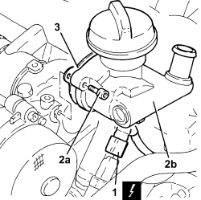

1084A22 ENGINE OIL FILLER - R.R.
- Path
- Procedures > 10 ENGINE > 1084 ENGINE LUBRICATION > 1084A INDICATORS/CHECK DEVICES > 1084A22 ENGINE OIL FILLER - R.R.
- Kind
- repair procedure (removal / refitting; the operation number is the code)
- Applies to
- engines: 1.9 JTD 16v, 2.4 JTD 20v; all production periods
- Interactive page
- https://sloeber94.github.io/elrnDB-fCrm/en/#/194002198
Applies to: engines: 1.9 JTD 16v, 2.4 JTD 20v; all production periods
 Removing
Removing
 Refitting
RefittingOp. 1016A10 SOUND-PROOFING COVER - R.R
1. Disconnect the rapid connector for the vacuum intake pipe from the vacuum pump.
2. Loosen the band and disconnect the oil vapour recovery pipe from the engine oil filler.

Applies to: engines: 1.9 JTD 16v, 2.4 JTD 20v; all production periods
1. Disconnect the electrical connection from the engine coolant temperature sensor.
Description | Connector | |
|---|---|---|
1 | Engine coolant temperature sensor/sender unit |
2. Undo the bolts (2a) and remove the engine oil filler (2b).
3. Remove the gasket.

Applies to: engines: 1.9 JTD 16v, 2.4 JTD 20v; all production periods
Refitting
Removing- Place the gasket back in its housing.
- Place the engine oil filler fitting in its housing and secure it by tightening the bolts to the recommended torque.
- Connect the electrical connection to the engine coolant temperature sensor.
- Connectt the oil vapour recovery pipe to the engine oil filler fitting and tighten the band.
- Connect the rapid connector for the vacuum intake pipe to the vacuum pump.